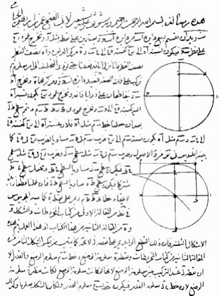

树荫下放着一卷诗章，一瓶葡萄美酒，一点干粮，有你在这荒原中傍我欢歌——荒原呀，啊，便是天堂!
（郭沫若译）
写这种诗的人肯定是热爱生活的。这首诗出自《柔巴依集》，这部诗集如今在东西方都相当有名，它的作者奥马尔·海亚姆（Omar Khayyám，公元1048—公元1122）（又译莪默·伽亚谟）被公认为中世纪最伟大的波斯诗人，以至于他在数学和天文学上的贡献，反倒不大为人所知了。
奥马尔出生在位于今天伊朗的内沙布尔，当时是塞尔柱突厥王国（中国古书把这里称作“呼罗珊”）的首府。奥马尔的父亲是制造帐篷的匠人。他先在著名的谢赫（部落长老）、学者穆罕默德·曼苏黎（Muhammad Mansuri，生卒年不详）指导下学习，后来拜于呼罗珊王国最伟大的学者伊曼·默瓦法克（Imam Mowaffaq Nishapuri，生卒年不详）门下。
有波斯的传闻说，奥马尔师从默瓦法克时，与两位同窗结为莫逆之交。这两个人一个叫哈桑·本·萨巴哈（Hassan Ben Sabah，公元1018—公元1092），另一个是尼扎姆·穆尔克（Nizam al-Mulk，生卒年不详）。三人发誓，苟富贵，勿相忘；一人发迹，三人平分。几年后，三人各奔前程。尼扎姆去喀布尔从政，不久成为呼罗珊王国苏丹阿尔普·阿尔斯兰（Alp Arslan，公元1029—公元1072）的重臣，衙门设在内沙布尔。哈桑也想从政，尼扎姆便为他找到一份肥缺。奥马尔则希望把精力全部放在研究之上，于是尼扎姆设法说服了苏丹，发给奥马尔年薪，让他专心治学。
奥马尔一边研究数学，一边为宫廷修改历法，同时为了消遣用阿拉伯文写下许多被称为柔巴依的四行诗。这些诗后来编纂成集，便是著名的《柔巴依集》。数学、天文、美酒和女人都是他吟咏的对象，那是他自己的生活。然而，在他玩世不恭的背后隐藏着深刻的迷惘：“我无法使自己全神贯注于代数的学习，因为时代的奇事逸闻和重重困苦妨碍了我。作为一个弱小的民族，我们缺乏学识渊博的人，问题多多，对生活的需求又剥夺了我学习的机会，只能利用睡觉的时间进行科学研究。而大多数人却只是模仿哲学家，把谬误当成真理，除了欺骗和假冒学者以外什么也不做；他们用自己知道的那点学问来追求财富，每当看到追求正确、倾向真理、努力反驳谬误、把伪善欺骗抛在一边的人，便极尽愚弄嘲笑之能事。”
二十岁时，奥马尔北上来到了撒马尔罕。曾经被亚历山大大帝征服过的撒马尔罕当时也在突厥人统治之下，时局很不稳定。奥马尔在法学家塔希尔（Tahir，生卒年不详）的庇护之下进行写作和研究，完成了代数学的重要发现，包括三次方程的几何解法。这在当时是最深奥、最前沿的数学。两年后，奥马尔根据这些成就发表了著名的《还原与对消问题之论证》（Treatise on Demonstration of Problems of Algebra and Almuqa-bala，简称《代数学》）。
又过了几年，呼罗珊王国的国王马力克·沙二世（Malik-Shah II，生卒年不详）在伊斯法汗登基。奥马尔接受了邀请到伊斯法汗去建设天文台。此后的十八年里，奥马尔一直在那里工作。他带领多位天文学家完成了一系列卓越的工作。比如，根据他的计算，当时的一年有365.242 198 581 56天。这小数点后十一位数字今天看来有点可笑，因为它相当于精确到千万分之一秒，不过也显示了研究者努力追求精确的愿望和信心。今天我们知道，19世纪末的年长是365.242 196天，现在的年长是365.242 190天。奥马尔的计算精度确实是相当惊人的。

图 24：奥马尔《代数学》中的一页，现存伊朗德黑兰博物馆
奥马尔利用符号来代表未知数，采用代数语言进行工作。他把方程当中的未知数叫作shay，意思就是“某个东西”。这个词传入西班牙，用西班牙语拼作xay，从那以后，欧洲的数学家们就把未知数称为xay，后来逐渐简化为x。这就是今天我们把未知数叫作x的来历。

最早的代数是文体代数。文体代数是指没有方程式，所有问题和论证都靠文字来描述：我们今天写x+1 = 2；可是早期的数学家只会写“某个数加上一等于二”。这种代数从古巴比伦时代一直延续到12世纪。奥马尔开创了简约代数，从他开始，数学论证的一部分使用符号来表示。而完全的符号代数，要等到笛卡尔（Rene Descartes，公元1596—公元1650）时代才完全成熟。值得玩味的是，尽管奥马尔发明了x，阿拉伯世界却没有发展出完整的符号代数。